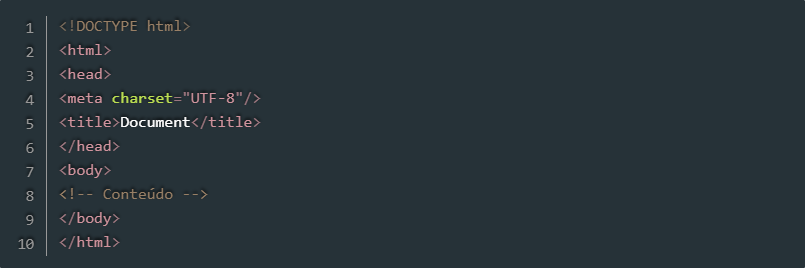
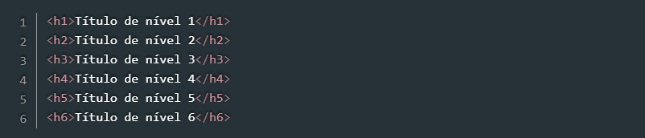
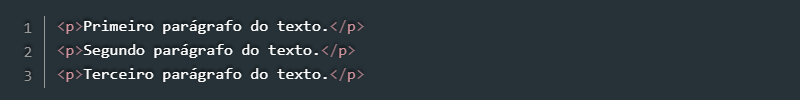
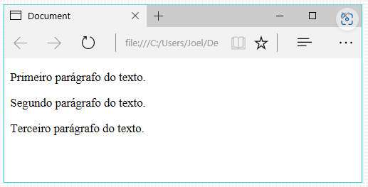
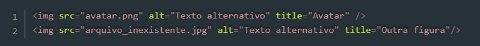
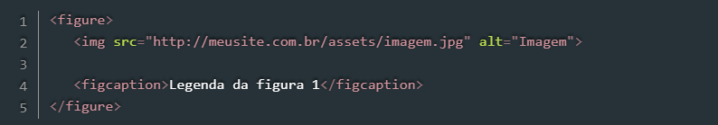
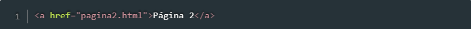
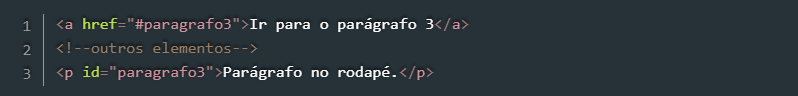
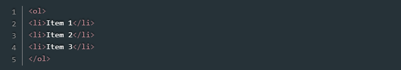
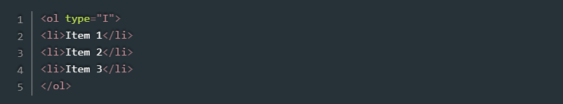

A estrutura básica de uma página HTML pode ser vista na Listagem 1, na qual vemos as principais tags que são necessarias para que o documento seja corretamente interpretado pelos browsers. 
Listagem 1 - Estrutura básica de uma página HTML
Linha 1: a instrução DOCTYPE deve ser sempre a primeira a aparecer em uma página HTML para
indicar ao browser qual versão da linguagem usada. Nesse caso, estamos trabalhando com a HTML5,
versão na qual a declaração do DOCTYPE é bastante simples, como podemos ver na listagem;
Linha 2 e 10: abertura e fechamento da tag html, que delimita o documento. Sendo assim,
todas as demais tags da página devem estar nesse espaço.
Linha 3 e 6: abertura e fechamento de tag head, que define o cabeçalho do documento. O
conteúdo nesse espaço não é visível no browser, mas contém instruções sobre seu conteúdo e comportamento.
Dentro dessa tag, por exemplo, podem ser inseridas folhas de estilo e scripts.
Linha 4 a tag meta, nesse caso, especifica qual conjunto de caracteres (character set ou charset)
será usado para renderizar o texto da página. O UTF-8 contém todos os caracteres dos padrões Unicode e ASCII, sendo, portanto, o mais
utilizado em páginas web. A mesma tag meta, porém com outros atributos, pode ser utilizada para outros fins, como na
SEO (Search Engine Optimazation);
Linha 5 a tag title define o título da página, aquele que aparece na janela/aba do navegador;
Linha 7 e 9 abertura e fechamento da tag body, marcando o espaço no qual deve estar contido o
conteúdo visual da página. As demais tags que representam texto, botões etc. devem ser adicionadas nesse intervaloç
Linha 8 nessa linha podemos observar a sintaxe para adição de comentários em HTML. Esse trecho não é
renderizado pelo browser.
Para desenvolver páginas com HTML basicamente precisamos de um editor de texto, como o Bloco de Notas do Windows,
Nano e Emacs no Linux, entre vários outros. Há, ainda, editores com opções avançadas, como recursos de syntax hilghligt e
autocomplete, como Sublime Text, Atom, Brackets e Visual Studio Code, que podem ser usados para editar documentos HTML.
Independentemente do editor utilizado, podemos simplesmente copiar o código da Listagem 1 para um deles e salvar o arquivo
com extensão .html. Em seguida, podemos abrir esse arquivo em um browser.
Um documento HTML é composto por tags, as quais possuem um nome e aparecem entre os sinais < e >.
Como vimos na Listagem 1, por exemplo, em < html > e < head >.
Naquele exemplo também vimos que algumas tags precisam ser abertas e fechadas, como em < body > < /body >.
Nesse caso, a tag de fechamento deve conter a barra / antes do nome. Outras, porém, não precisam ser fechadas,
com tag < meta >. Nesse caso, a adição da barra / no final da propria tag, como vemos na Linha 4
da Listagem 1 é opcional.
Cabeçalhos são normalmente utilizados para identificar páginas e seções e possuem aparência diferenciada do restante
do texto. No HTML há seis níveis de cabeçalhos/títuls que podem ser utilizados por meio das tags:
h1, h2, h3, h4, h5, h6,
sendo h1 o maior/mais relevante e h6 o menor/menos relevante.
Na Listagem 2 podemos ver como utilizar essas tags, e na Figura 1 temos o resultado desse código. Para testar esse código, basta copiá-lo para o espaço indicado na Linha 8 da Linha 1 e salvar o documento com a extensão .html.
Listagem 2 - Estrutura básica de uma página HTML
Figura 1 - Diferentes níveis de cabeçalho
Parágrafos de textos são gerados na HTML por meio des tags < p > < /p >. Esse é um exemplo de tag cuja disposição na tela se da em forma de bloco, ou seja, um parágrafo é posto sempre abaixo do outro. O código da Listagem 3 adiciona três parágrafos, que podem ser visualizados na Figura 2 
Listagem 3 - Adicionando parágrafos
Figura 2 - Parágrafos visualizados na página
A inserção de imagens em uma página HTML pode ser feita por meio da tag img, que recebe no
atributo src o endereço do arquivo a ser carregado. Além desse, outros dois atributos importantes
são o alt, que indica um texto alternativo que será exibido caso o arquivo não possa ser carregado, e
title, que indica o texto que aparecerá como tooltip ao passar o mouse sobre a figura.
O código da Listagem 4 insere uma imagem a partir do arquivo avatar.png, localizado na mesma
pasta do arquivo HTML, e uma tag img apontando para um arquivo inexistente. Observe na Figura 3
que enquanto a primeira aparece corretamente, a segunda é exibida com um ícone de erro o texto alternativo que informamos.
Note, ainda, que sobre a primeira figura está sendo exibido o tooltip definido no atributo title.

Listagem 4 - Inserindo imagens
Figura 3 - Exemplos de uso de tag img
No caso da tag img, ainda temos as tags figure e figcaption que serão abordadas no tópico de HTML Semântico, porém, a sua estrutura é simples e é representada pelo código abaixo:
Listagem 4.1 - Imagem com legenda
Links são normalmente utilizados para direcionar o usuário para outras páginas, ou para outras partes da mesma página. Nos dois casos, utilizamos a tag a, que possui o atributo href no qual indicamos o destino daquele link. A Listagem 5 mostra como adicionar um link para outra página, neste caso, indicada pelo arquivo pagina2.html.
Listagem 5 - Inserindo link
Já a Listagem 6 mostra como adicionar um link para um elemento na mesma página. Nesse caso, ao clicar no link o browser mudará o foco para o elemento que possui o atributo id igual àquele indicado no href.
Listagem 6 - Inserindo link com id
Note também que nesse caso o href requer ainda o sinal de cerquilha (#) antes do id do elemento que será o foco do link.
Listas são elementos úteis para organizar e ordenar itens que estão relacionados de alguma forma. No HTML é possível criar três tipos de listas: ordenadas (com a tag ol), não ordenadas (com a tag ul), e de definição (por meio da tag dl).
Na Listagem 9 temos um exemplo de lista ordenada, enquanto a Listagem 10 traz um exemplo de lista não ordenada. Em seguida, a Figura 6 mostra o resultado dos dois códigos. Observe que cada item das primeiras listas é definido pela tag li.
Listagem 9 - Lista ordenada
Figura 6 - Lista ordenada e não ordenada
No caso das listas ordenadas temos o atributo type que permite especificar o tipo de marcador a ser usado: números (padrão), números romanos ou letras.
Listagem 9.1 - Lista ordenada por número romano maiúsculo
Os valores permitidos para esse atributo são: